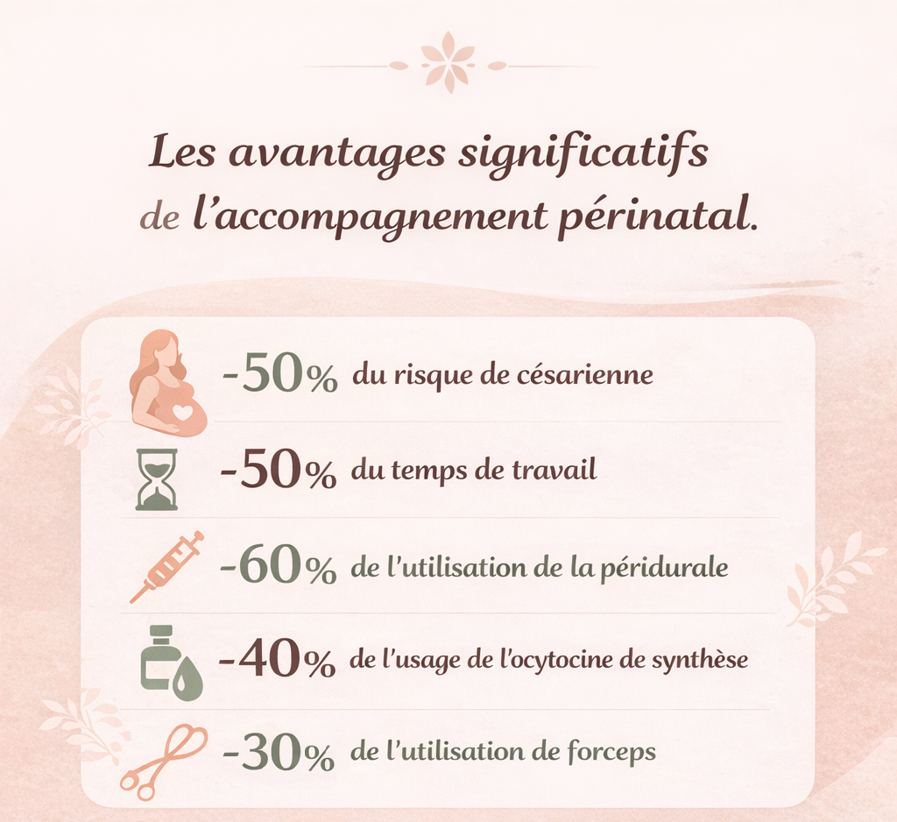

Accompagnement périnatal
Suivre mon actualitéQui suis-je ?
Bonjour, je suis Marlène Sabras, doula et naturopathe
périnatale. Formée à l’école internationale Doula Cybèle,
j’accompagne les grossesses, les accouchements et le post-partum.
Ambassadrice Flux Libre Instinctif, j’accompagne aussi le cycle
menstruel. Bientôt conseillère en symptothermie.
Naturopathe périnatale, je vous amène vers la pleine santé et
j’apporte une réponse aux inconforts de grossesse, un soutien vers
une meilleure fertilité, un soutien pour l’allaitement, le tout de
manière naturelle. Je suis aussi conseillère en huiles
essentielles DōTERRA pour les parents et pour les enfants !
Mes services
Une doula ?
Une doula est en général une femme, une accompagnante à la périnatalité : avant la conception, pendant la grossesse, pendant l'accouchement ou durant le post-partum mais aussi dans toutes les étapes de la vie d’une femme : cycle menstruel, ménopause, deuil.
peut avoir différents rôles, sans pratiques médicales. La doula offre un soutien physique, psychologique et émotionnel important. Durant les accouchements, elle rassure les mères et elle contribue à un environnement d'accouchement plus serein et respectueux. À la différence d'une sage-femme, une doula ne fait pas d'études de médecine. Elle ne pratique aucun soin médical, ne pose aucun diagnostic et ne fait aucune prescription de médicaments.
doula aura un rôle de soutien du travail de la sage-femme pour accompagner le ou les parents de l'enfant à naitre. Les deux métiers sont complémentaires et l’accompagnement doula s’ajoute au suivi médical.
